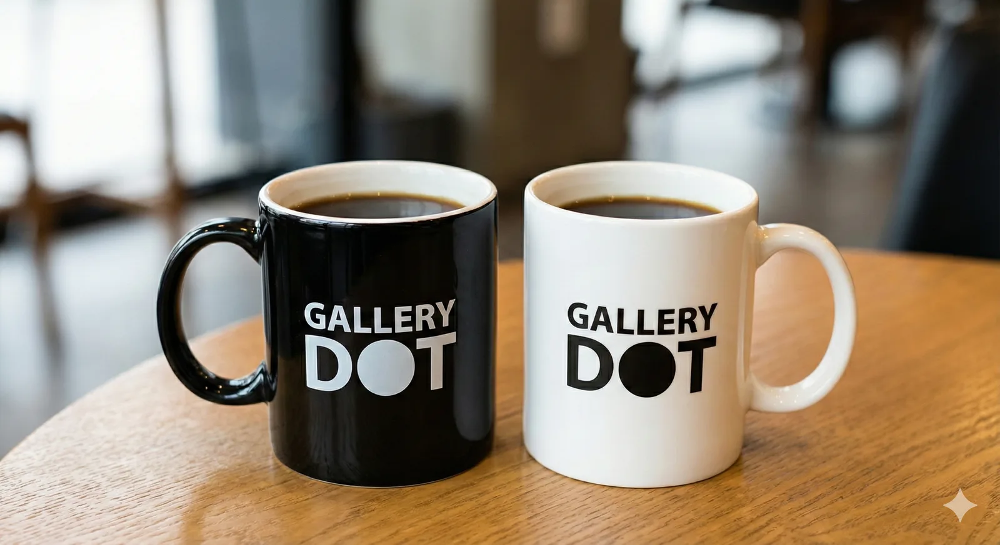
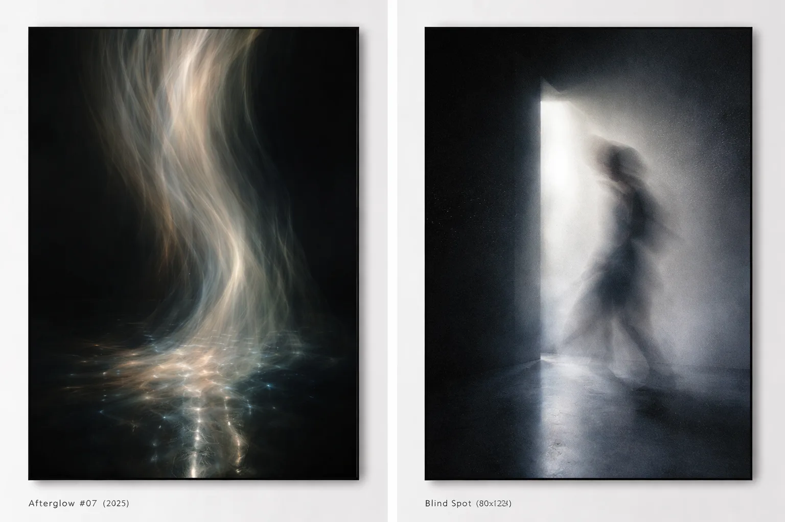
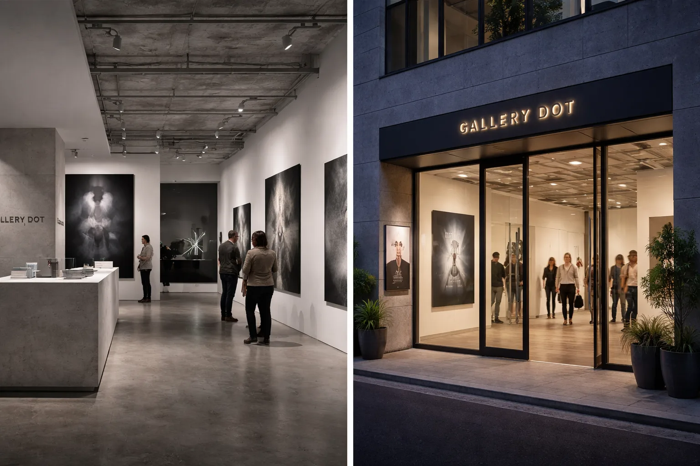

10TH ANNIVERSARY EXHIBITION
AFTER IMAGE
10年の残像。
12:00–19:00 / 火曜休廊
来場予約する ↗
事前予約で10周年マグカップ
01 / CONCEPT
光が去ったあとに、
像だけが残る。
光が去ったあとに浮かぶ像のように、創作の時差を見つめる展覧会。10年で出会った作家たちの新作・未公開作を中心に、記憶と物質が交わる瞬間を展示します。

A trace is not an ending.
It is where another image begins.
02 / FEATURED WORKS
4 ARTISTS
03 / EXHIBITION SPACE
静寂の中で、
作品と向き合う。

HARAJUKU / TOKYO
BARRIER FREE
04 / ANNIVERSARY GIFT
予約して、
10年の記憶を持ち帰る。
対象
LPから来店予約し、当日QRチェックインした方
在庫
各日40個 / 2色（なくなり次第終了）
同伴
1予約につき最大2名。特典は予約者本人のみ
BLACK0/40
WHITE0/40
05 / EVENTS
Event
Schedule
11JAN / SUN
TALK EVENT 14:00–15:30キュレーターと巡る
キュレーターと巡る
“残像”の時間
出演：DOT キュレーターチーム
17JAN / SAT
LIVE PERFORMANCE 18:00–19:00音と光の
音と光の
インスタレーション
出演：aoistudio
06 / HISTORY
10 Years,
Still Moving.
- 2016GALLERY DOT オープン
- 2018国内外のアートフェアへ出展
- 2020オンライン展「DOT VIRTUAL」開始
- 2024海外アーティストとの共同展
- 202610TH ANNIVERSARY
07 / ACCESS
Visit
GALLERY DOT
〒150-0001東京都渋谷区神宮前 1-2-3
DOT BLDG 1F
東京メトロ「明治神宮前（原宿）」駅 徒歩2分
JR「原宿」駅 徒歩5分
08 / FAQ
よくある
ご質問
予約なしでも入れますか？
混雑時は予約優先・入場制限があります。特典は予約来場者のみです。
同伴者も特典はもらえますか？
特典は予約者本人のみ1点です。同伴者は最大2名まで入場できます。
時間変更は可能ですか？
前日18:00まで、予約完了メール内の「予約変更」リンクから変更できます。
再入場はできますか？
当日中に限り、受付でスタンプをご提示いただくと再入場できます。
子連れでも大丈夫ですか？
ご来場いただけます。未就学児は手をつなぐなど、安全にご配慮ください。
09 / RESERVE
来場予約
30分ごとの時間枠でご予約いただけます。予約完了後、チェックイン用QRをメールでお送りします。